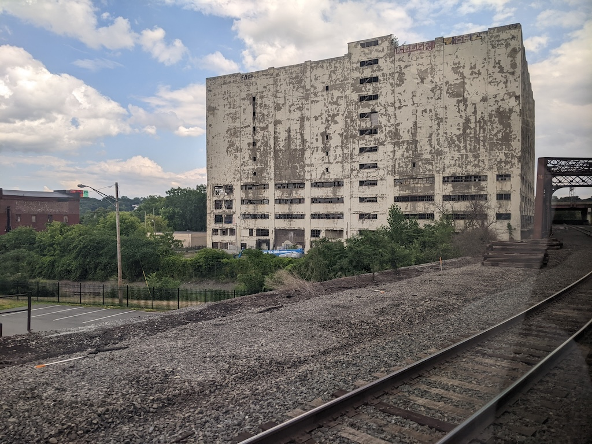
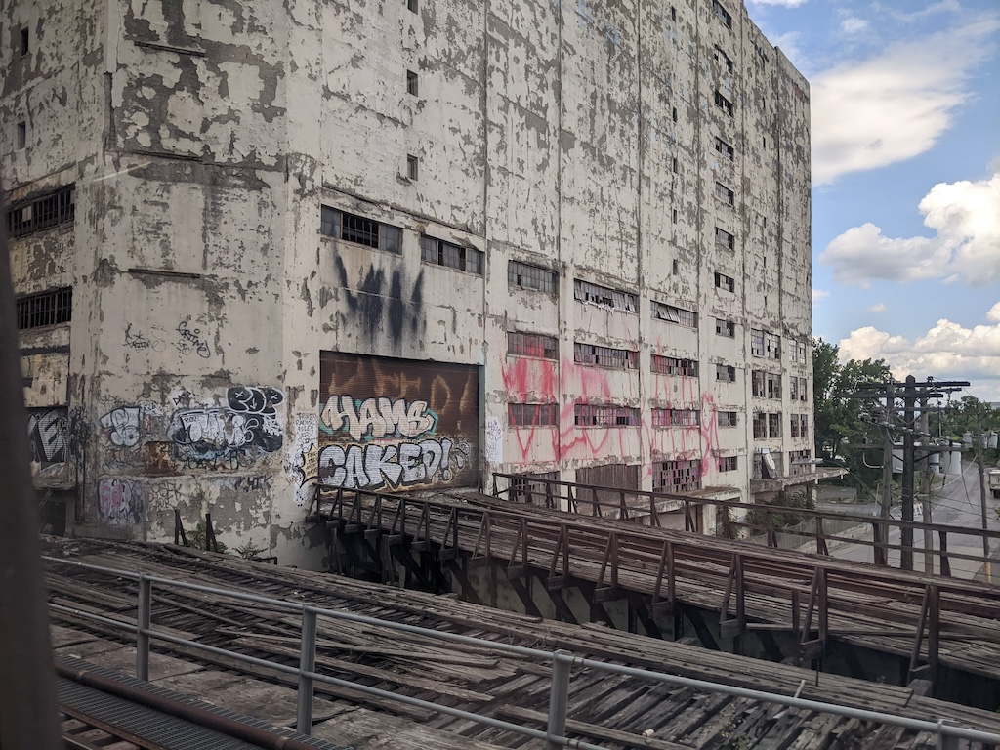

This past week Amtrak suspended travel between Albany and New York because of a deteriorating parking garage in Hell’s Kitchen. Service has resumed, but it’s a reminder of how fragile infrastructure can be in the United States. This is also the second time in about a year that a privately-owned building threatened the Empire Corridor, and the last time it happened it nearly wrecked my vacation plans.
Back in August 2022, I needed a break, and I drew up a plan to visit my sister up in northern New York and a friend in Boston. I’d take the first Burlington-bound Ethan Allen Express up to Middlebury, where my sister could pick me. After a few days, take the Essex-Charlotte ferry over to Vermont, and take the Ethan Allen Express back down to New York City. A day or two in Brooklyn, then an Acela round-trip to Boston.
The first portent of doom was waking up to see a missed call from Amtrak. Amtrak doesn’t call me unless there’s a problem with my train:
We wanted to let you know that train #291, from New York City Penn Station on Friday, July 29th, has been DELAYED due to late operations. However, alternate routes and times may be available.
I’m mentally running through all the scenarios that could stab a train originating in New York. Railfan chatter says there’s an unstable building near Albany, and we eventually get confirmation from the Times-Union: Crumbling Central Warehouse shuts down Amtrak service west of Albany.

I want to emphasize that this building is just a few feet from the Amtrak main line between Albany and Schenectady. Passed it many times, never took notice of it. The developer apparently had notions of lofts, mixed-use, or some such, but nothing ever came of it. And now, it’s about to fall on the only decent direct rail connection between Albany and western New York, on the first day of rail service between New York City and Burlington in decades.
Also, on the day I’m supposed to travel between New York and Middlebury. I took the bus into New York anyway, figured I’d have more options. In the end I skipped the inevitable bus bridge, my sister drove a little farther to retrieve me from Albany, and I kept a wary eye on developments from northern New York.
For railfan message boards, which are prone to conspiracy and scuttlebutt anyway, the next few days were a veritable hothouse of speculation and innuendo. Dark theories of who was responsible and what would be done. Claims that Amtrak could run past the building and didn’t want to for some reason (“woke safety culture”). Whispers about a political conspiracy in Albany. Reports that Amtrak crews were qualifying for the Selkirk Subdivision. Fantasies about other possible routes, several long-abandoned, for bypassing the warehouse. Meanwhile, I enjoyed my visit and waited for an inevitable ominous message from Amtrak…
…that never came. Tuesday morning we made an on-time departure from Union Station in Burlington. The only sign that anything was amiss was that the cafe car was closed, as the trainset had been north of Albany all this time and hadn’t seen a commissary. The crew brought snacks on board for everyone. Ours was the first Ethan Allen Express to make a complete revenue run from Burlington to New York. We passed the Central Warehouse slowly and carefully, and it did not fall on us. We were on time into Penn.

I’ve passed the Central Warehouse a few times since then. I always give it a little wave. I’m sure it’ll come down at some point. Until then, it’s a physical reminder of bizarre few days in August.
For all my photos of that trip, including Essex, Brooklyn, Long Island, and Boston, please see 2022 Northeast on my galleries site.